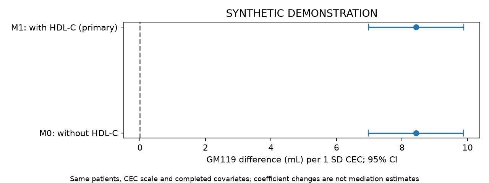

SYNTHETIC DEMONSTRATION — NOT PATIENT RESULTS
五项独立队列；不要求Hcy。患者行和ID仅保存在本地分析目录，不进入本报告。
| step | remaining | excluded_here |
|---|---|---|
| clinical_image_union | 2400 | 0 |
| adult_ischemic_stroke | 2400 | 0 |
| available_true_icv | 2400 | 0 |
| available_gm119_ml | 2400 | 0 |
| available_lesion_ml | 2400 | 0 |
| observed_baseline_cec | 2286 | 114 |
| known_baseline_sample_time | 2286 | 0 |
| analysis | study | tier | family | status | n | outcome_unknown | parameters | imputations | p | statistic | df1 | df2 | method | m | primary_terms | estimate | lower | upper | same_primary_imputations | ratio | ratio_lower | ratio_upper | r | p_bh_secondary |
|---|---|---|---|---|---|---|---|---|---|---|---|---|---|---|---|---|---|---|---|---|---|---|---|---|
| primary | cec | primary | ols | ESTIMATED | 2286 | 0 | 27 | 2 | 4.864e-30 | 129.7 | 1 | 3.847e+10 | Rubin scalar Wald | 2 | cec | 8.43 | 6.979 | 9.881 | NaN | NaN | NaN | NaN | NaN | NaN |
| complete_case | cec | sensitivity | ols | ESTIMATED | 2004 | 0 | 27 | 1 | 2.802e-26 | 112.5 | 1 | inf | Rubin scalar Wald | 1 | cec | 8.495 | 6.925 | 10.07 | NaN | NaN | NaN | NaN | NaN | NaN |
| without_hdl_same_sample | cec | sensitivity | ols | ESTIMATED | 2286 | 0 | 26 | 2 | 5.334e-30 | 129.5 | 1 | 3.456e+10 | Rubin scalar Wald | 2 | cec | 8.425 | 6.974 | 9.876 | True | NaN | NaN | NaN | NaN | NaN |
| white_matter | cec | secondary | ols | ESTIMATED | 2286 | 0 | 27 | 2 | 0.8894 | 0.01933 | 1 | 6.31e+07 | Rubin scalar Wald | 2 | cec | -0.00165 | -0.02491 | 0.02161 | NaN | NaN | NaN | NaN | NaN | 0.8894 |
| apo_ai_adjusted | cec | secondary | ols | ESTIMATED | 2286 | 0 | 28 | 2 | 2.065e-29 | 126.8 | 1 | 7.381e+10 | Rubin scalar Wald | 2 | cec | 8.379 | 6.92 | 9.837 | NaN | NaN | NaN | NaN | NaN | 8.262e-29 |
| function60 | cec | secondary | multinomial | ESTIMATED | 2126 | 0 | 74 | 2 | 0.005193 | 7.811 | 1 | 3.787e+07 | Rubin scalar Wald | 2 | dependent:cec | -0.1521 | -0.2588 | -0.04545 | NaN | 0.8589 | 0.7719 | 0.9556 | NaN | 0.01039 |
| function60_with_gm | cec | secondary | multinomial | ESTIMATED | 2126 | 0 | 76 | 2 | 0.2064 | 1.596 | 1 | 5.704e+08 | Rubin scalar Wald | 2 | dependent:cec | -0.07108 | -0.1814 | 0.03919 | NaN | 0.9314 | 0.8341 | 1.04 | NaN | 0.2752 |
| function60_observation_weighted | cec | sensitivity | multinomial | ESTIMATED | 2126 | 160 | 74 | 2 | 0.005373 | 7.749 | 1 | 1.842e+11 | Rubin scalar Wald | 2 | dependent:cec | -0.1532 | -0.2611 | -0.04534 | NaN | 0.8579 | 0.7702 | 0.9557 | NaN | NaN |
| cec_spline | cec | sensitivity | ols | ESTIMATED | 2286 | 0 | 28 | 2 | 3.226e-29 | 65.6 | 2 | 6.297e+07 | D1 pooled multivariate Wald | 2 | cec;cec_rcs | NaN | NaN | NaN | NaN | NaN | NaN | NaN | 0.0001544 | NaN |
多分类系数取指数表示 P(该状态)/P(独立) 的比值之比，不能标为HR。联合检验显著不代表每个系数都显著。

| analysis | study | tier | family | status | n | outcome_unknown | parameters | imputations | p | statistic | df1 | df2 | method | m | primary_terms | estimate | lower | upper | same_primary_imputations |
|---|---|---|---|---|---|---|---|---|---|---|---|---|---|---|---|---|---|---|---|
| primary | cec | primary | ols | ESTIMATED | 2286 | 0 | 27 | 2 | 4.864e-30 | 129.7 | 1 | 3.847e+10 | Rubin scalar Wald | 2 | cec | 8.43 | 6.979 | 9.881 | NaN |
| without_hdl_same_sample | cec | sensitivity | ols | ESTIMATED | 2286 | 0 | 26 | 2 | 5.334e-30 | 129.5 | 1 | 3.456e+10 | Rubin scalar Wald | 2 | cec | 8.425 | 6.974 | 9.876 | True |
主要模型调整HDL-C；M0使用同一患者、同一套完成数据与固定CEC尺度。仅删除模型中的HDL-C项。比较系数和区间，不以P值一显著一不显著判断模型差异。
| estimate | se | lower | upper | p | df | m | within_variance | between_variance | term | scale |
|---|---|---|---|---|---|---|---|---|---|---|
| 550.7 | 3.249 | 544.3 | 557 | 0 | 2.393e+05 | 2 | 10.53 | 0.01438 | intercept | difference |
| 8.43 | 0.7403 | 6.979 | 9.881 | 4.864e-30 | 3.847e+10 | 2 | 0.5481 | 1.863e-06 | cec | difference |
| -19.08 | 1.746 | -22.5 | -15.66 | 8.462e-28 | 9.128e+07 | 2 | 3.047 | 0.0002126 | age | difference |
| 1.087 | 1.99 | -2.812 | 4.987 | 0.5848 | 1.517e+07 | 2 | 3.958 | 0.0006775 | age_rcs | difference |
| 0.7909 | 1.488 | -2.125 | 3.707 | 0.595 | 1.165e+08 | 2 | 2.213 | 0.0001367 | sex_2 | difference |
| -0.1153 | 2.103 | -4.237 | 4.006 | 0.9563 | 9.168e+08 | 2 | 4.422 | 9.736e-05 | smoking_2 | difference |
| -1.204 | 2.12 | -5.359 | 2.95 | 0.5699 | 1.975e+11 | 2 | 4.494 | 6.742e-06 | smoking_3 | difference |
| -3.802 | 2.058 | -7.836 | 0.2309 | 0.06464 | 3.452e+08 | 2 | 4.235 | 0.0001519 | smoking_4 | difference |
| 3.237 | 2.14 | -0.9569 | 7.432 | 0.1303 | 1.531e+09 | 2 | 4.58 | 7.802e-05 | drinking_2 | difference |
| 1.029 | 2.036 | -2.962 | 5.021 | 0.6132 | 1.936e+09 | 2 | 4.146 | 6.283e-05 | drinking_3 | difference |
| 0.9806 | 2.085 | -3.106 | 5.067 | 0.6381 | 4.614e+11 | 2 | 4.347 | 4.266e-06 | drinking_4 | difference |
| -1.393 | 1.498 | -4.331 | 1.545 | 0.3526 | 1416 | 2 | 2.184 | 0.03975 | hypertension_2 | difference |
| -0.4515 | 1.487 | -3.366 | 2.463 | 0.7614 | 9.528e+07 | 2 | 2.211 | 0.000151 | diabetes_2 | difference |
| -3.908 | 1.496 | -6.84 | -0.9755 | 0.009001 | 1.1e+11 | 2 | 2.238 | 4.498e-06 | prior_stroke_2 | difference |
| 0.1412 | 0.2496 | -0.348 | 0.6303 | 0.5716 | 2.225e+05 | 2 | 0.06215 | 8.803e-05 | bmi | difference |
| 2.016 | 2.329 | -2.549 | 6.581 | 0.3868 | 1.63e+04 | 2 | 5.381 | 0.02832 | education_2 | difference |
| 0.9515 | 2.339 | -3.633 | 5.536 | 0.6841 | 3.453e+06 | 2 | 5.468 | 0.001963 | education_3 | difference |
| 3.117 | 2.388 | -1.564 | 7.798 | 0.1919 | 1.25e+05 | 2 | 5.687 | 0.01076 | education_4 | difference |
| 0.6982 | 2.391 | -3.988 | 5.384 | 0.7703 | 5.094e+06 | 2 | 5.714 | 0.001689 | education_5 | difference |
| 4.742 | 2.546 | -0.2478 | 9.732 | 0.06252 | 1.538e+05 | 2 | 6.465 | 0.01102 | cysc | difference |
| 0.6553 | 1.259 | -1.812 | 3.122 | 0.6026 | 4.77e+07 | 2 | 1.584 | 0.0001529 | ldl | difference |
| -1.619 | 1.324 | -4.215 | 0.9758 | 0.2213 | 4.107e+04 | 2 | 1.745 | 0.005768 | tg | difference |
| -0.1819 | 1.587 | -3.292 | 2.929 | 0.9088 | 2.704e+06 | 2 | 2.517 | 0.001021 | prior_statin_1 | difference |
| 0.5043 | 0.3689 | -0.2188 | 1.227 | 0.1716 | 1.627e+10 | 2 | 0.1361 | 7.112e-07 | sample_day | difference |
| -1.388 | 1.24 | -3.818 | 1.043 | 0.2631 | 2.855e+10 | 2 | 1.538 | 6.066e-06 | lesion_ml | difference |
| 0.2861 | 0.8233 | -1.328 | 1.9 | 0.7282 | 5.39e+08 | 2 | 0.6778 | 1.947e-05 | icv_ml | difference |
| -2.17 | 2.959 | -7.97 | 3.63 | 0.4633 | 1.213e+07 | 2 | 8.754 | 0.001676 | hdl | difference |
完成模型 2；参数数 27；最大设计条件数 4.27。完整诊断见 fit_diagnostics.json。
缺失处理依赖MAR假设。功能状态图为固定访视结局的标准化概率，不是首次失能的累积发生率。血压分析是实测血压的条件关联。次要分析报告研究内BH-FDR；总汇报另列固定五项Holm校正。